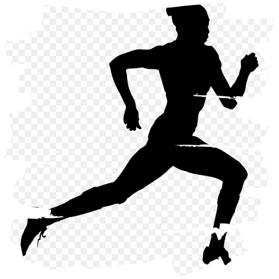
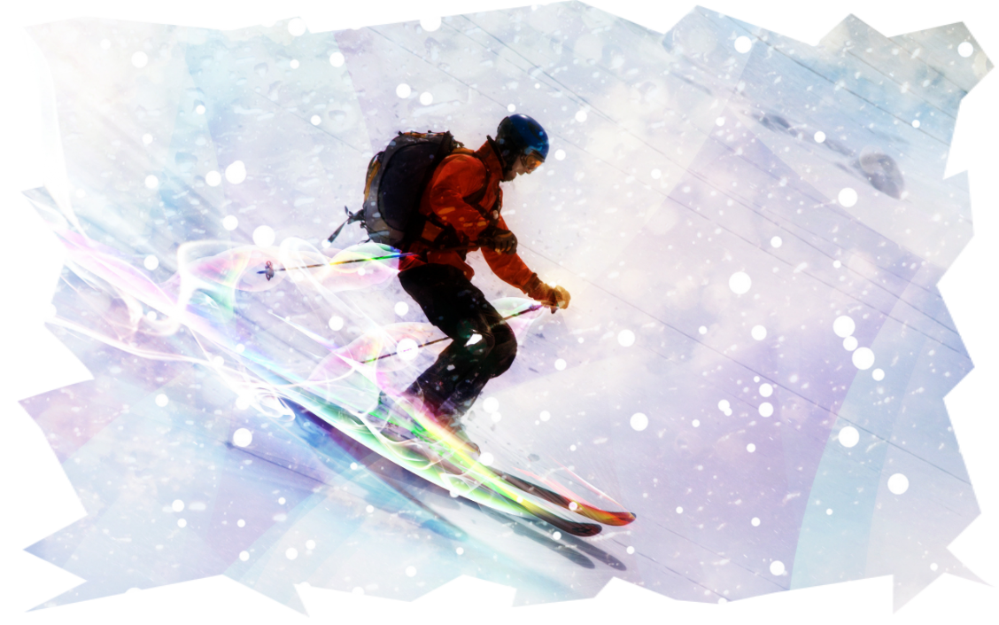
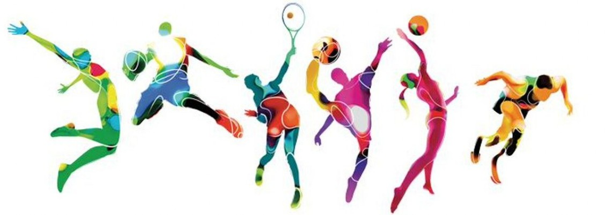
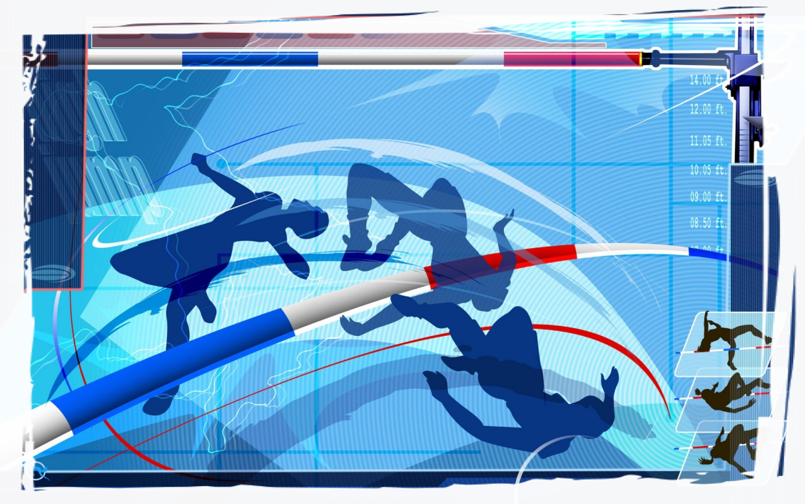
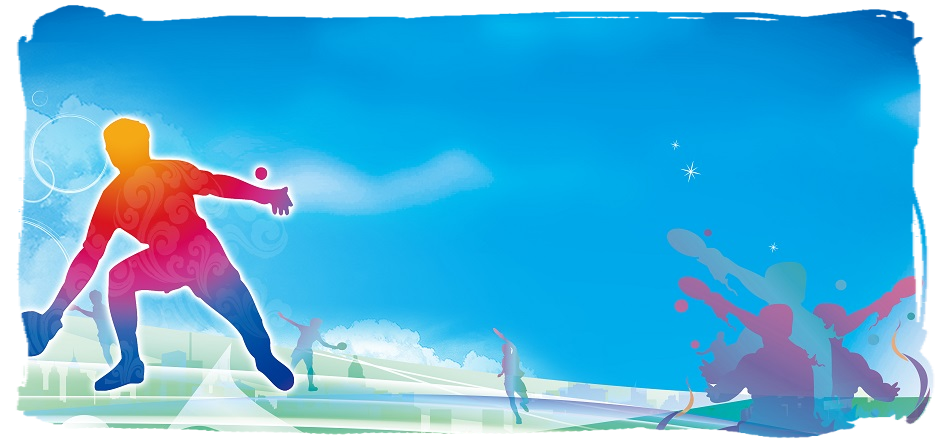
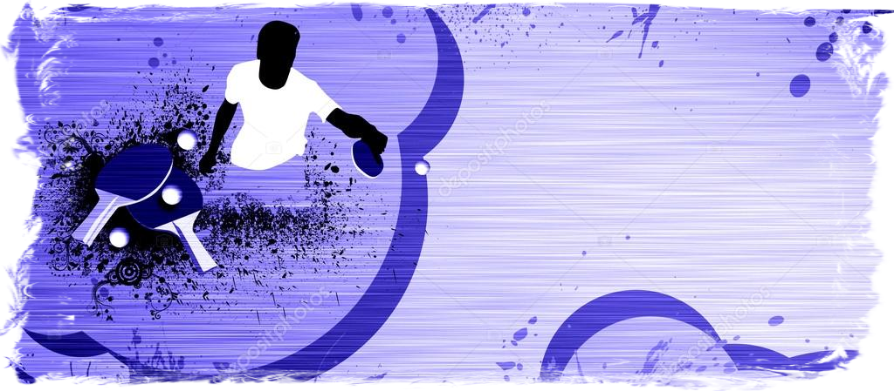

Здоровье до того перевешивает все остальные блага жизни, что поистине здоровый нищий счастливее больного короля.

Зачем нужно заниматься спортом — 10 полезных свойств регулярных тренировок
Чем полезен спорт для здоровья?
Было доказано, что быть физически активным полезно не только для физического здоровья, но и для психологического состояния. Считается, что это даже продлевает жизнь.
Ниже описаны 10 способов, которыми регулярные физические упражнения положительно влияют на ваш организм.
1. Они могут помочь вам чувствовать себя более счастливыми

Было доказано, что регулярные физические нагрузки помогают улучшить настроение и уменьшить чувство депрессии, тревожности и стресса.
Во время упражнений оказывается воздействие на области мозга, ответственные за формирования чувства тревожности и стресса.
Также увеличивается чувствительность головного мозга к серотонину и норепинефрину, которые облегчают чувство депрессии.
Во время физических упражнений также стимулируется продукция эндорфинов, которые стимулируют положительные эмоции и уменьшают восприимчивость к боли.
Кроме этого, было доказано, что физические упражнения уменьшают симптомы тревожности.
Они также помогают людям осознать свои страхи и бороться с ними.
Интересен тот факт, что интенсивность физических нагрузок не имеет значения.
Положительное влияние на ваше настроение оказывается вне зависимости от уровня интенсивности тренировок. Исследование с участием 24 женщин, страдающих от депрессии, показало, что упражнения любой интенсивности подавляют чувство депрессии.
Эффекты физических упражнений на ваше настроение настолько сильны, что отказ от регулярных физических нагрузок даёт о себе знать уже через очень короткий промежуток времени.
В ходе одного исследования был проведен опрос 26 здоровых мужчин и женщин, которые регулярно ходили на тренировки.
Им предлагалось либо продолжить регулярные упражнения, либо прекратить их на срок около 2-х недель. Те люди, которые прекратили заниматься, отметили более частые эпизоды плохого настроения за исследуемый период.
2. Упражнения могут помочь избавиться от лишнего веса
Многие исследования подтверждают, что гиподинамия – один из основных факторов развития ожирения.
Для того, чтобы понять, каким образом физические упражнения способствуют уменьшению веса, необходимо проследить связь между физической активностью и затратой энергии.
Наше тело расходует энергию на 3 основных процесса: переваривание пищи, обеспечение физической активности и поддержание жизненно важных функция организма, таких как сердцебиение и дыхание.
Когда вы соблюдаете диету, уменьшение количества поступающих с пищей калорий приводит к замедлению метаболизма, что, в свою очередь, замедляет процесс потери лишнего веса.
Регулярные физические упражнения, наоборот, способствуют активации метаболизма, что помогает «сжигать» лишние калории и уменьшать вес.
Исследования также показали, что сочетание аэробики и силовых тренировок может максимально увеличить количество сжигаемого жира и поддерживать достаточную мышечную массу, что очень важно для поддержания нормального веса.
3. Упражнения полезны для ваших мышц и костей

Регулярные физические нагрузки жизненно важны для построения и поддержания сильных мышц и костей.
Силовые тренировки особенно эффективны в комбинации с употреблением в пищу достаточного количества белков.
Это происходит потому, что при выполнении физических упражнений выделяются гормоны, которые увеличивают потребление мышцами аминокислот.
Это помогает наращивать мышечную массу и повышать выносливость мышц.
В процессе старения люди постепенно теряют мышечную массу и силу, что может привести к патологическим переломам и инвалидизации.
Регулярные физические упражнения важны для предотвращения потери мышечной массы и поддержания силы мышц в борьбе с возрастными изменениями.
Физические упражнения способствуют формированию более плотных и крепких костей у людей молодого возраста.
Они также предотвращают остеопороз в старшем возрасте. Интересен тот факт, что такие виды спорта, как гимнастика, бег, футбол, баскетбол обеспечивают формирование костей большей плотности, чем при плавании или езде на велосипеде.
4. Упражнения увеличивают запас энергии в организме

Физические упражнения – мощный энергетический стимулятор для организма как для здоровых людей, так и для тех, кто страдает различными заболеваниями.
В одном исследовании было установлено, что регулярные физические тренировки в течение 6 недель уменьшили чувство усталости у 36 людей, у которых оно до этого было зафиксировано.
Кроме этого, физические упражнения могут увеличить запасы энергии в организме людей, страдающих от синдрома хронической усталости и других серьёзных заболеваний.
Фактически, при борьбе с хронической усталостью физические упражнения даже более эффективны, чем другие виды лечения, среди которых пассивные» виды терапии – релаксация, растяжки или вообще отсутствие лечения.
Было также доказано, что регулярные физические упражнения увеличивают энергетические запасы в организме людей, страдающих хроническими прогрессивными заболеваниями, такими как рак, ВИЧ/СПИД и рассеянный склероз.
5. Физические упражнения уменьшают риск развития хронических заболеваний

Одной из главных причин развития хронических заболеваний является недостаток физической активности.
Было доказано, что регулярные физические упражнения повышают чувствительность тканей к инсулину, повышают выносливость сердечно-сосудистой системы и общую выносливость организма.
Также они способствуют понижению и стабилизации артериального давления и уровня холестерина.
В противоположность, недостаток физической активности – даже в течение непродолжительного периода – может способствовать значительному накоплению жира в брюшной полости, увеличивает риск развития сахарного диабета 2 типа, заболеваний сердца и ранней смерти.
Поэтому, ежедневная физическая активность рекомендована для борьбы с жировыми отложениями в области живота и снижения риска развития сахарного диабета.
6. Физические упражнения способствуют улучшению состояния кожи
Ваша кожа может подвергнуться негативному влиянию оксидативного стресса в вашем организме.
Оксидативный стресс происходит, когда антиоксидантная система организма не может полностью восстановить повреждения, нанесённые свободными радикалами клеткам организма.
Это может повредить внутриклеточные структуры и ухудшить состояние вашей кожи.
Даже несмотря на то, что очень интенсивные и изнуряющие тренировки могут усугубить оксидативный стресс, регулярные умеренные физические нагрузки способствуют выработку естественных антиоксидантов в вашем организме, которые помогают защищать клетки.
Подобным образом физические упражнения стимулируют кровоток в коже и предотвращают возрастные изменения.
7. Физические упражнения способствуют улучшению памяти и других функций мозга
Физические упражнения способствуют стимуляции функция мозга и сохранению памяти и мыслительных процессов.
Изначально физические упражнения способствуют учащению сокращений сердца, а вместе с этим - улучшению притока крови (а с ней и кислорода) к мозгу.
Упражнения также стимулирую выработку гормонов, которые способствуют росту нервных клеток.
Кроме этого, способность регулярных физических упражнений предотвращать хронические заболевания, оказывает положительно влияние, в том числе и на головной мозг, так как болезни могут оказывать на него негативное влияние.
Регулярные физические упражнения особенно важны у людей более старшего возраста, так как процесс старения в сочетании с оксидативным стрессом и воспалением способствуют патологическим изменениям структуры и функций мозга.
Было доказано, что физические упражнения способствуют увеличению гиппокампа – части мозга, ответственной за память и обучаемость.
Это способствует улучшению умственно активности людей пожилого возраста. Недавно также было доказано, что регулярные физические упражнения уменьшают патологические изменения в мозге при болезни Альцгеймера и при шизофрении.
8. Упражнения помогают лучше расслабляться и улучшают сон

Регулярные упражнения помогают вам лучше расслабляться и улучшают сон.
Что касается улучшения качества сна, истощение энергетических запасов организма во время физических упражнений способствует стимуляции восстановительных процессов во время сна.
Также считается, что повышение температуры тела во время физических нагрузок улучшает сон за счёт процесса её стабилизации во сне.
Многие исследования влияния физических упражнений на качество сна дают похожие результаты.
В одном исследовании было доказано, что 150 минут умеренно-интенсивной физической нагрузки в неделю помогает улучшить качество сна на 65%.
В другом исследовании было показано, что регулярные физические нагрузки в течение 16 недель улучшили качество сна у 17 людей, страдающих бессонницей, позволив им спать более длительно и спокойно, чем в контрольной группе.
Это также позволило им чувствовать себя более бодрыми в течение дня.
Кроме этого, оказывается, что регулярные физические упражнения оказывают значительное положительное влияние на качество сна у пожилых людей, которые, как известно, страдают расстройствами сна.
Вы можете быть достаточно свободны в выборе типа физических упражнений.
Как аэробика отдельно, так и аэробика в сочетании с силовыми тренировками, одинаково положительно влияют на качество сна.
9. Физические упражнения уменьшают боли
Хроническая боль может подчас становиться нестерпимой, но физические упражнения могут помочь с ней бороться.
Многие годы рекомендации по уменьшению хронической боли включали покой и уменьшение двигательной активности.
Тем не менее, последние исследования показали, что физические упражнения – достаточно эффективное средство борьбы с хронической болью.
Обзор нескольких исследований показал, что качество жизни участников исследований улучшилось, и боль уменьшилась при регулярном выполнении соответствующих комплексов физических упражнений.
Несколько исследований показали, что регулярные физические упражнения помогают контролировать боль, ассоциированную с множеством заболеваний, таких как хроническая боль в спине, фибромиалгия (боль в связках), хронические боли мягких тканей плеча и др.
Кроме этого, физические упражнения могут притуплять восприятие боли и повышать толерантность к ней .
10. Физические упражнения могут улучшить сексуальную жизнь
Ранее было доказано, что физические упражнения способны усиливать сексуальное возбуждение.
Всё это может оказать положительное влияние на вашу сексуальную жизнь.
Регулярная физическая активность может улучшить сексуальную функцию и чувство удовольствия, так же как и способствовать более частой сексуальной активности.
В одном из исследований женщины возраста около 40 лет отметили, что стали испытывать оргазм более часто, когда начали регулярно выполнять различные физические упражнения – спринты, силовые тренировки и др.
А 178 исследуемых мужчин подтвердили, что большее число часов упражнений в неделю стимулировало их сексуальную функцию. В одном исследовании было показано, что обычная регулярная 6-минутная прогулка недалеко от дома помогла 41 мужчине с эректильной дисфункцией уменьшить симптомы на 71%.
Другое исследование, объектами которого были 78 мужчин с преимущественно сидячим образом жизни, показало как 60 минут прогулки в день примерно 3-4 дня в неделю, улучшило их сексуальное поведение, включая частоту, функциональность и удовлетворение.
Кроме этого исследование показало, что женщины, страдающие от синдрома поликистозных яичников, что может уменьшить сексуальное возбуждение.
Регулярные физические упражнения в течение 16 недель достоверно увеличивали сексуальный драйв.